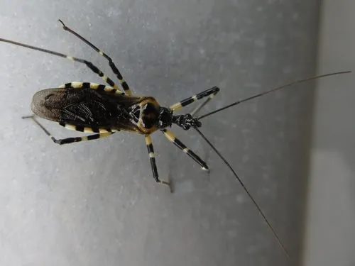

昆虫 · 动物界
环斑猛猎蝽 Sphedanolestes impressicollis

捕食性蝽类，体黑色带橙红色环斑，用刺吸式口器捕食多种昆虫，是农林害虫的天敌，被捉住时可能叮咬。
- 分类
- 门节肢动物门纲昆虫纲目半翅目科猎蝽科属猛猎蝽属
- 栖息环境
- 林缘、灌丛、农田与花园，在枝叶间捕食
- 地理分布
- 中国南方及东亚地区
- 保护级别
- 暂无评估；天敌昆虫
物种志
环斑猛猎蝽成虫体长约 1.5–2 cm，体黑色，腹部边缘和足上有橙红色或黄褐色的环状斑纹，身体细长，头部延长，口器为弯曲的刺吸式，前足粗壮，适于捕捉猎物。
它生活在林缘、灌丛、农田和花园，捕食蛾类幼虫、蚜虫、叶蝉、甲虫等多种昆虫，是农林生态系统中的重要天敌。猎蝽捕食时用口器刺入猎物体内，注入消化液后再吸食。环斑猛猎蝽在中国南方常见，行动敏捷，善于隐藏。它对人一般不主动攻击，但被捉住或挤压时可能叮咬，引起疼痛和红肿，处理昆虫时应避免直接用手抓，被叮咬后要及时清洁伤口，出现过敏症状应就医。
形态与习性
- 食性捕食蛾类幼虫、蚜虫、叶蝉等昆虫
- 体长约 1.5–2 cm
- 识别体黑色，腹部边缘和足有橙红色环斑
- 生态作用农林害虫的天敌
- 防护被捉住时可能叮咬，避免直接用手抓
趣味知识
- 环斑猛猎蝽用弯曲的刺吸式口器刺入猎物体内取食。
- 它是农林害虫的天敌，能捕食多种蛾类幼虫。
- 猎蝽被捉住时可能叮人，处理时最好用工具或戴手套。